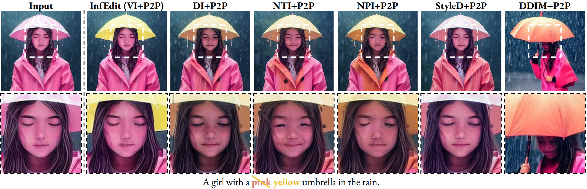
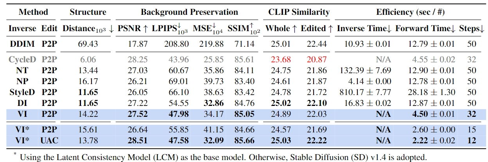

InfEdit in various complex image editing tasks:
_00.png)
Comparison
Comparison with inversion-base methods:


Despite recent advances, diffusion models often fail to achieve consistent results in image manipulation due to unintended semantic changes. They also face an efficiency bottleneck, as many attention-based methods require image inversion and a larger number of denoising steps. To address these challenges, we make an attempt to eliminate the inversion process and introduce Denoising Diffusion Consistent Model (DDCM), a sampling strategy that enables virtual inversion. DDCM leverages a diffusion process that significantly enhances consistency throughout the image generation phases, ensuring fidelity and speed in transforming and refining visual content. We present Unified Attention Control (UAC) for tuning-free image editing through natural language that integrates cross-attention and self-attention control within a unified framework. Combining them, we present an inversion-free editing (InfEdit) method that allows for consistent editing at both the semantic and spatial levels, catering to intricate modifications without compromising on the image's integrity and explicit inversion. Through extensive experiments, InfEdit shows strong performance in complex editing tasks and also maintains a seamless workflow (about 1 second on one A40), demonstrating the potential for real-time applications.
A painting of a waterfall
[+and angels]
in the mountains
A woman in a coat
[+and dress]
is dancing
A light brown bear sitting standing on the ground
A woman in a white red
dress sitting on a chair with flowers
A man in a white shirt standing in front of trees mountains
Existing inversion-based editing methods are limited for real-time and real-world language-driven image editing applications, and DDCM offers an alternative to address these limitations, introducing an Inversion-Free Image Editing (InfEdit) method.
InfEdit starts from a random terminal noise zsrcτ1 = ztgtτ1 ∼ N(0, I).
The source branch follows the DDCM sampling process without explicit inversion, and we directly compute the distance Δεcons between εcons the εθsrc (the predicted noise to reconstruct a z0src).
For the target branch, we first compute the εθtgt to predict z0tgt, and then calibrate the predicted target initial with the same Δεcons.
@